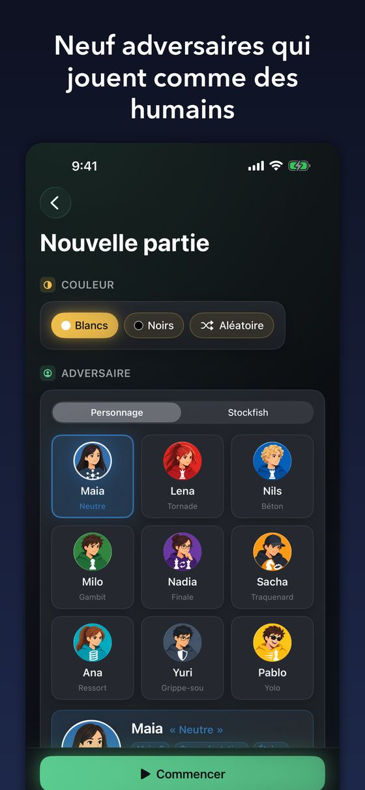
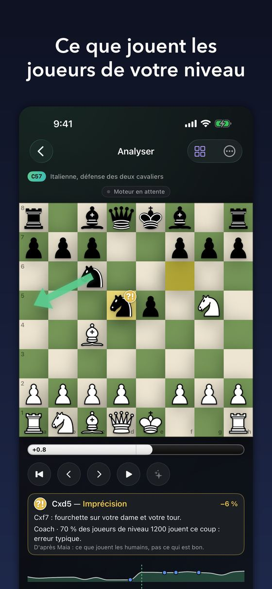
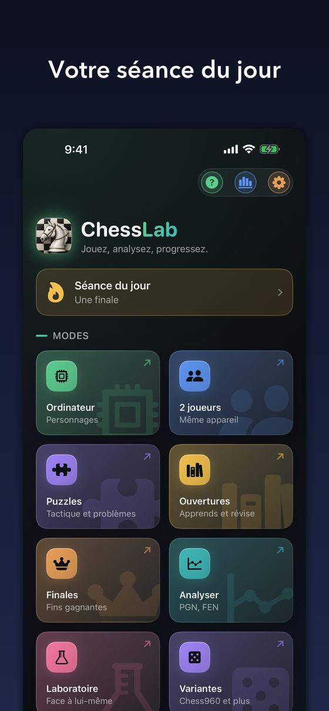
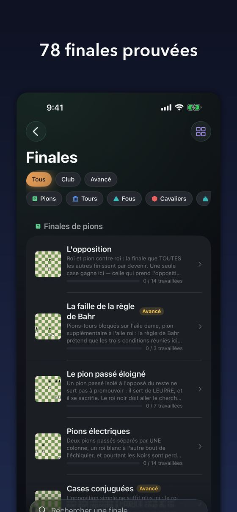
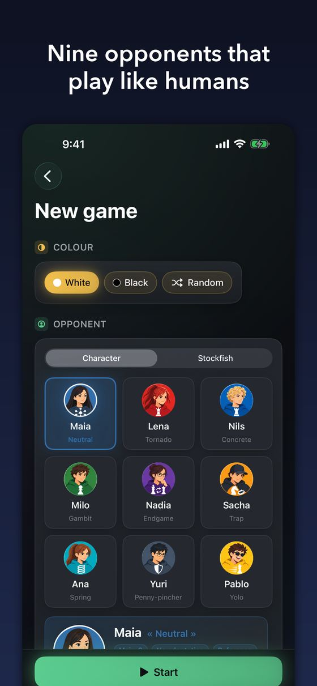
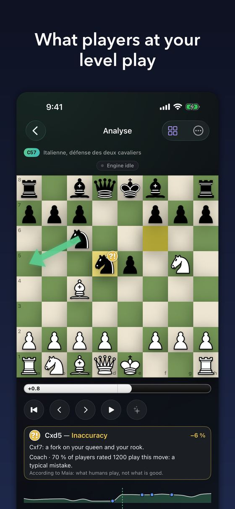
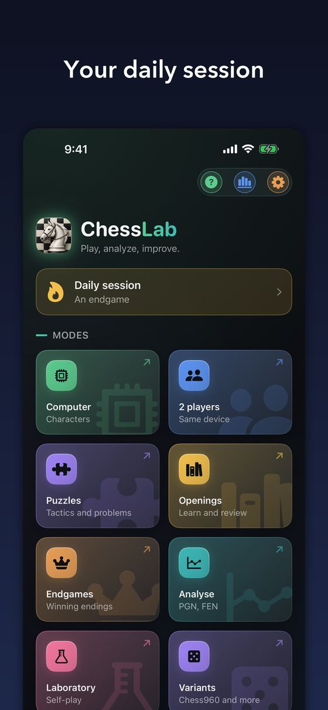
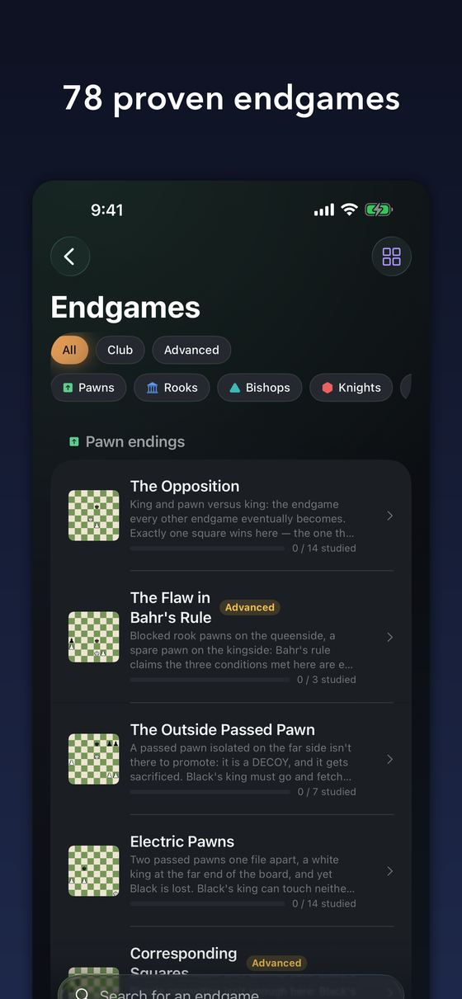

Français · English
ChessLab
Jouer, analyser, progresser — sur votre appareil, et nulle part ailleurs.
iPhone, iPad et Android.
Gratuite · sans publicité · sans compte · open source
Télécharger sur l'App Store Disponible sur Google Play




Aucun compte. Aucun réseau. Aucune donnée qui sort de l'appareil.
Ce n'est pas une intention, c'est vérifiable : l'application Android ne
demande pas la permission INTERNET, sans laquelle aucun programme
ne peut ouvrir la moindre connexion. Mettez-la en mode avion — tout fonctionne,
y compris l'analyse et les adversaires, qui calculent sur l'appareil.
Ce qu'elle fait
Jouer
Contre neuf personnages qui jouent comme de vrais joueurs de leur niveau, gaffes comprises, ou contre Stockfish bridé au curseur. À deux sur le même appareil aussi. Douze variantes : Chess960, Roi de la colline, Horde, Atomique, Crazyhouse, Duck Chess…
Analyser
Chaque coup classé, chaque faute expliquée — pas seulement signalée. L'app dit pourquoi un coup était mauvais, en une phrase, et ne nomme que ce qui se voit sur l'échiquier. Vos erreurs deviennent des exercices.
Apprendre
58 ouvertures et 78 finales, en cours jouables plutôt qu'en listes à retenir. Plus de 130 000 puzzles. La répétition espacée décide de ce que vous revoyez et quand.
Scanner
Photographiez un échiquier réel ou une capture d'écran : la position arrive sur le plateau. La reconnaissance se fait sur l'appareil.
Liens
Français · English
ChessLab
Play, analyse, improve — on your device, and nowhere else.
iPhone, iPad and Android.
Free · no ads · no account · open source
Download on the App Store Get it on Google Play




No account. No network. No data leaving the device.
This is not a promise, it is verifiable: the Android app does not request the
INTERNET permission, without which no program can open a connection
at all. Put it in airplane mode — everything works, including analysis and the
computer opponents, which compute on the device.
What it does
Play
Against nine characters who play like real players of their level, blunders included, or against Stockfish throttled by a slider. Two players on one device too. Twelve variants: Chess960, King of the Hill, Horde, Atomic, Crazyhouse, Duck Chess…
Analyse
Every move graded, every mistake explained — not merely flagged. The app says why a move was bad, in one sentence, and names only what can be seen on the board. Your mistakes become exercises.
Learn
58 openings and 78 endgames, as courses you play rather than lists you memorise. Over 130,000 puzzles. Spaced repetition decides what you review, and when.
Scan
Photograph a real chessboard or read a screenshot: the position lands on the board. Recognition runs on the device.